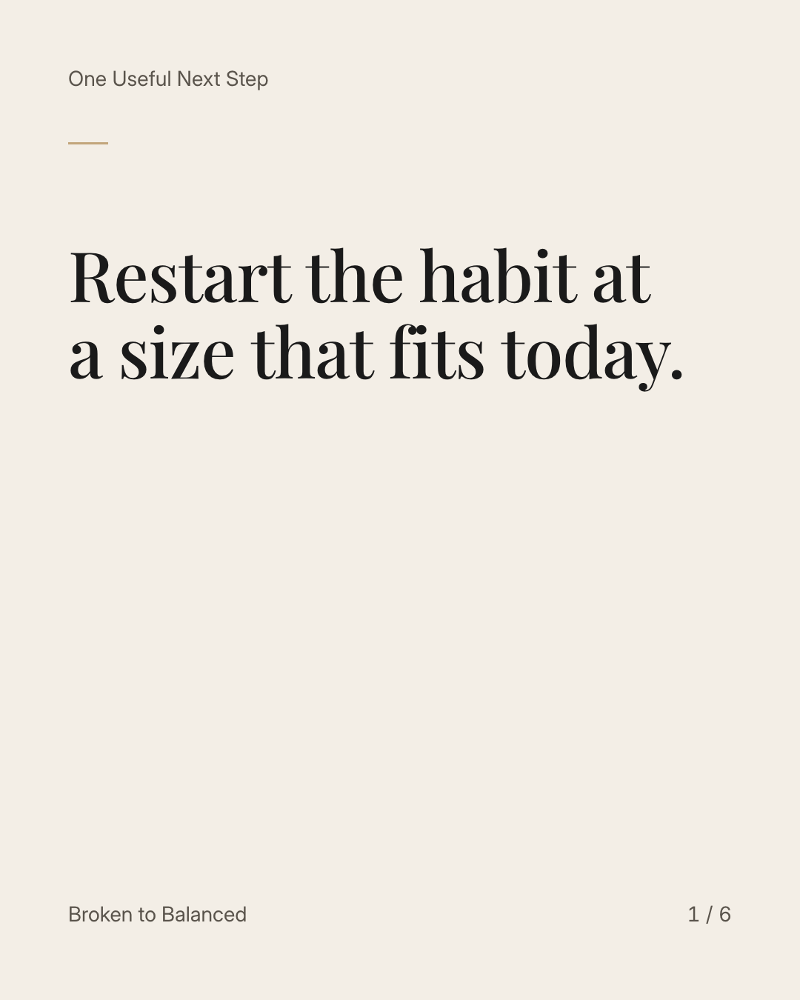
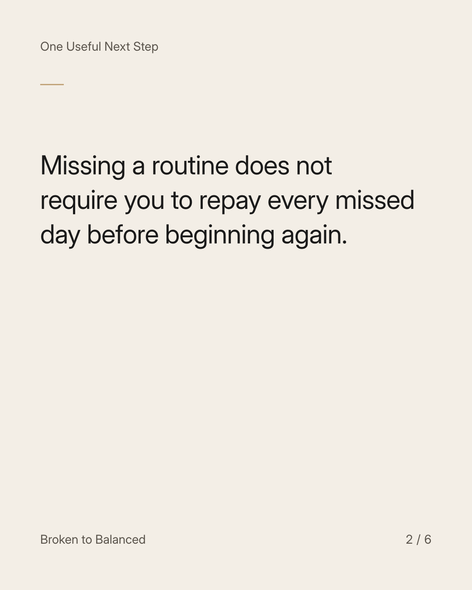
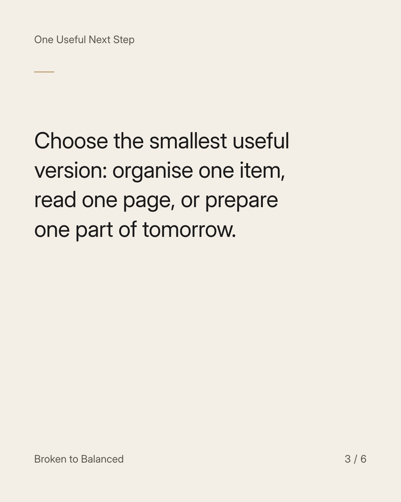
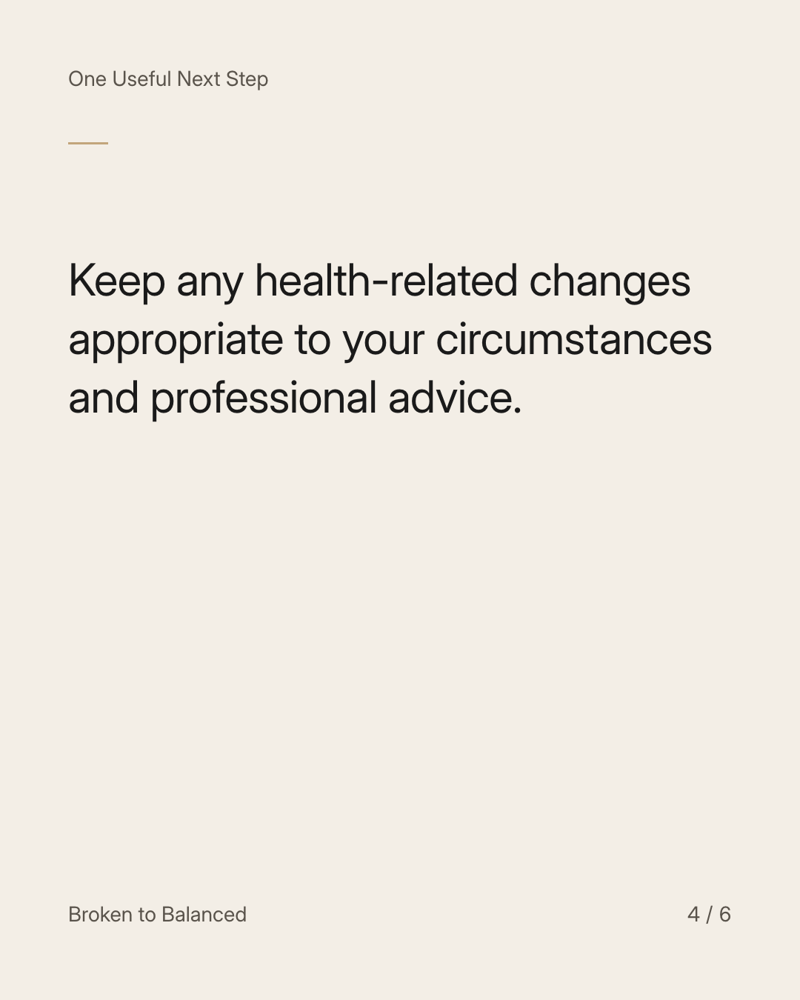
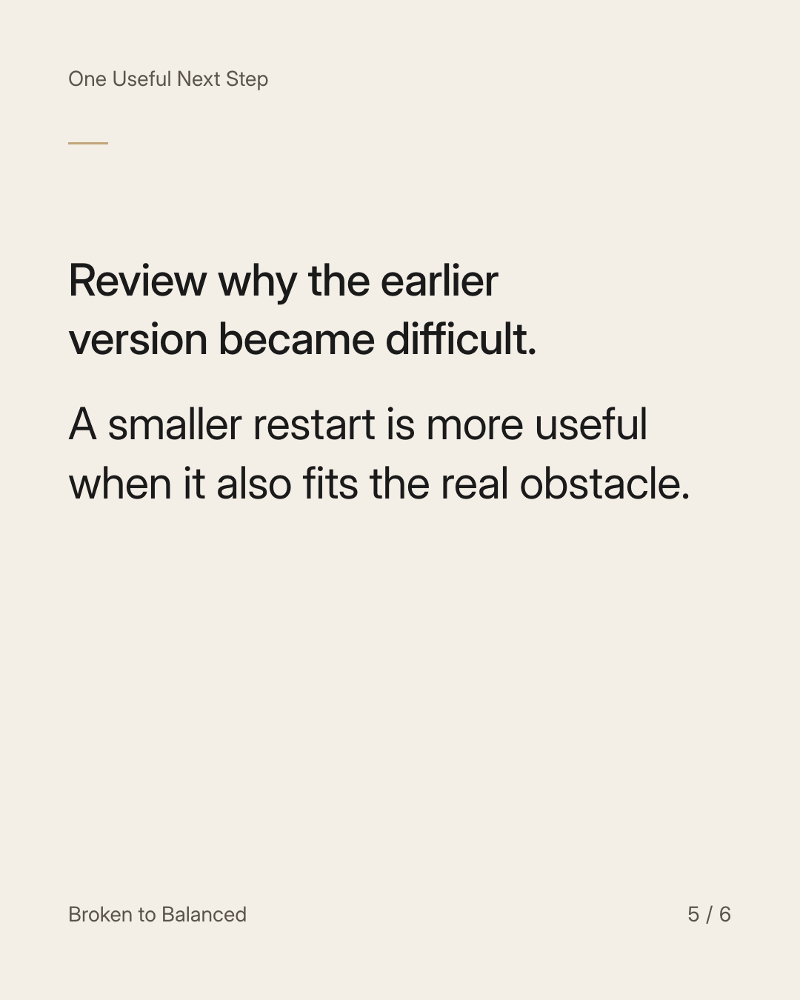
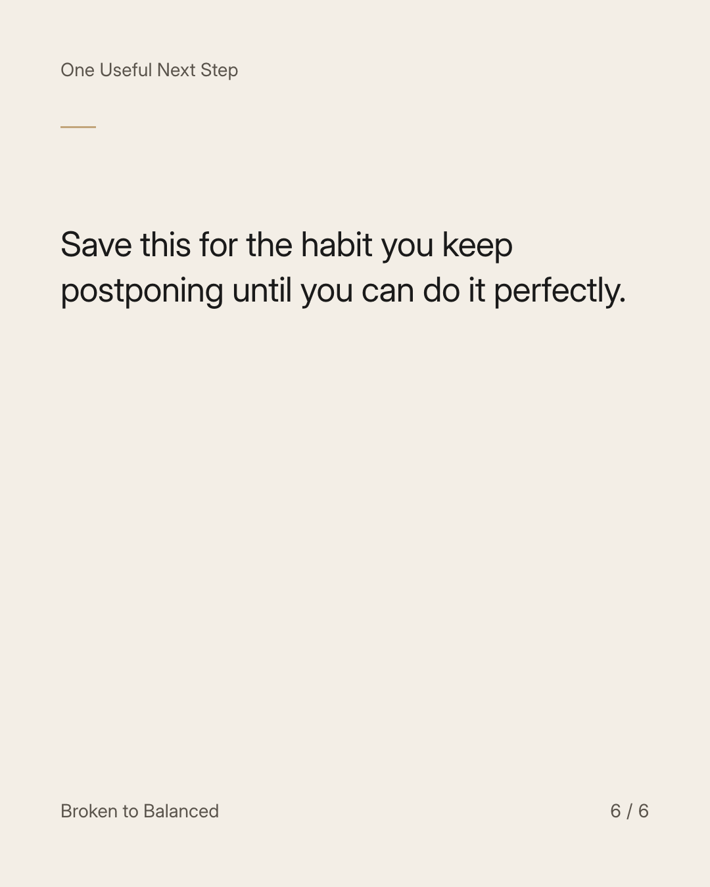

Exact text and accessibility text
Restart the habit at a size that fits today.
Slide 1 of 6. Restart the habit at a size that fits today.


Exact text and accessibility text
Missing a routine does not require you to repay every missed day before beginning again.
Slide 2 of 6. Missing a routine does not require you to repay every missed day before beginning again.


Exact text and accessibility text
Choose the smallest useful version: organise one item, read one page, or prepare one part of tomorrow.
Slide 3 of 6. Choose the smallest useful version: organise one item, read one page, or prepare one part of tomorrow.


Exact text and accessibility text
Keep any health-related changes appropriate to your circumstances and professional advice.
Slide 4 of 6. Keep any health-related changes appropriate to your circumstances and professional advice.


Exact text and accessibility text
Review why the earlier version became difficult. A smaller restart is more useful when it also fits the real obstacle.
Slide 5 of 6. Review why the earlier version became difficult. A smaller restart is more useful when it also fits the real obstacle.


Exact text and accessibility text
Save this for the habit you keep postponing until you can do it perfectly.
Slide 6 of 6. Save this for the habit you keep postponing until you can do it perfectly.
Exact caption
Plain-text fallback: select and copy the caption.